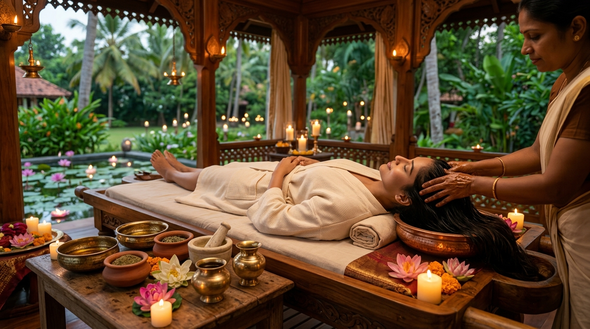
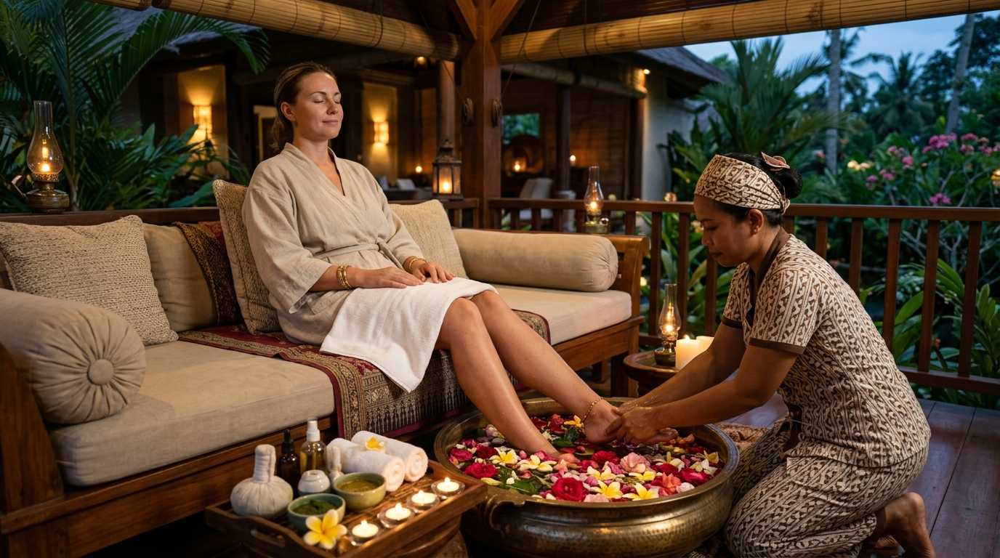

Explore our complete well-being offerings: authentic classical Ayurveda, restorative wellness bodywork, botanical beauty care, specialized face and body therapies, and hair & foot grooming in Mauritius.
Ayurveda is one of the world's most sophisticated traditional healing sciences, originating over 5,000 years ago. At Ayuryoga International, our authentic therapies are administered with specially formulated warm herbal oils, medicated decoctions, and traditional techniques.
Whether you are seeking relief from muscular tension, joint stiffness, mental stress, or looking to detoxify and revitalize your vital energies (Doshas), our classical Ayurvedic therapies provide holistic, time-tested restorative care.

Traditional rhythmic full-body massage using warm medicated herbal oils to improve blood flow, soothe the nervous system, nourish tissues, and enhance cellular vitality.
A continuous, gentle stream of warm herbal oil poured over the forehead (Ajna chakra) to melt mental fatigue, relieve insomnia, and induce profound mental peace.
Warm herbal boluses (Podikizhi, Naranga Kizhi, Njavara Kizhi) applied over the body to alleviate joint stiffness, ease muscular inflammation, and enhance mobility.
Therapeutic herbal dough reservoirs retaining warm medicinal oils over specific areas such as the lower back, neck, or knees to alleviate localized tension and disc strain.
Purifying nasal administration of herb-infused oils following facial massage and mild steam, cleansing sinuses, sharpening sensory organs, and soothing tension headaches.
Invigorating therapeutic dry herbal powder scrub massaged in upward strokes to stimulate lymphatic drainage, enhance skin texture, and support healthy metabolism.
Modern lifestyles often accumulate physical fatigue and mental overload. Our wellness collection is crafted to give you dedicated time and space to recharge, de-stress, and regain physical harmony in a tranquil environment.
From signature full-body relaxation sessions to focused deep tissue bodywork, warm basalt stone therapies, and herbal steam baths, each session is tailored to your comfort and relaxation goals.

A harmonious synthesis of traditional warmth and fluid relaxation massage strokes from head to toe, leaving body and mind feeling profoundly centered.
Focused, firmer pressure aimed at releasing deep muscular knots, chronic tension patterns, and postural tightness resulting from daily exertion.
Classic long, sweeping strokes designed to encourage cardiovascular circulation, increase oxygen delivery to muscles, and ease physical fatigue.
Heated basalt volcanic stones and pure essential oil blends working in synergy to melt muscular tightness and envelop the senses in calming warmth.
Targeted pressure point stimulation on the feet and legs corresponding to major organs, activating restorative energy channels throughout the entire body.
Traditional herbal steam cabin treatment following massage to open pores, promote gentle perspiration, and help herbal oils absorb deeply into tissues.
In Ayurvedic philosophy, outer beauty reflects inner vitality (*Saundarya*). Our natural beauty care rituals harness fresh botanicals, precious herbal pastes, organic floral waters, and medicinal roots without harsh artificial additives.
Treat your complexion and hair to personalized therapies that gently cleanse, deeply moisturize, and restore a radiant, luminous glow through the power of pure nature.

An authentic purifying therapy applied with acupressure techniques to clear blemishes, balance natural sebum, and detoxify congested pores.
A regal ritual using cooked Njavara medicinal rice cooked in herbal milk to deliver intense hydration, firmness, and natural youthful radiance.
Traditional scalp oil massage followed by nourishing herbal leaf pastes (Amla, Brahmi, Bhringraj) that strengthen roots, reduce dandruff, and boost shine.
Comprehensive clarifying therapy with deep exfoliation, warm herbal steam, gentle pore cleansing, detoxifying mud mask, and back massage.
Our facial treatments combine ancient Ayurvedic formulations with Marma point acupressure. Each facial is tailored to balance your skin's unique doshic constitution, purifying pores, increasing collagen elasticity, and restoring vibrant health.
From brightening saffron and red sandalwood masks to deep pore detox and botanical anti-aging elixirs, experience soothing face therapies crafted from 100% pure botanicals.

Traditional facial with warm poultices of medicated Navara red rice and organic milk, restoring moisture balance and tone.
Brightening ritual using pure Rakta Chandana (Red Sandalwood) paste and herbal steam to even out skin tone and diminish hyperpigmentation.
Collagen-supporting face massage with herbal serums and firming herbal masks to soften fine lines and promote youthful elasticity.
Gentle natural exfoliation and custom herbal clay masks formulated to purify congested pores and reduce excess sebum.
Classical Ayurvedic clarifying treatment utilizing potent purifying herbal extracts to calm breakouts and soothe sensitive skin.
Enriched with turmeric, wild saffron, and rose extracts to restore luminous natural radiance to dull and tired complexions.
Re-energize your body with traditional Ayurvedic body scrubs, clarifying back treatments, and herbal steam baths. Our body rituals eliminate dead skin cells, stimulate lymphatic circulation, and nourish deeper dermal layers.
Using fresh botanical grains, cold-pressed oils, and herbal detox wraps, each body ritual leaves your skin supple, smooth, and wonderfully glowing.

Targeted purifying therapy for the back featuring deep pore cleansing, herbal steam, gentle scrub, detoxifying mask, and massage.
Exfoliating full-body ritual using freshly blended local herbs and grains to refine skin texture and boost microcirculation.
Dynamic dry herbal powder scrub applied in upward strokes to stimulate lymphatic drainage and tone subcutaneous tissues.
Medicated steam chamber session that dilates pores and promotes deep perspiration to flush accumulated cellular toxins.
According to Ayurveda, vibrant hair (*Kesha*) is an extension of bone tissue (*Asthi Dhatu*) and balanced nervous vitality. Our hair therapies utilize nutrient-dense botanical oils and fresh herbal pastes to nourish roots and calm mental stress.
Whether addressing hair fall, premature graying, dry scalp, or stress-related thinning, our specialized scalp packs and hot oil massages restore natural shine and strength.

Soothing natural herbal mask prepared with Amla, Brahmi, Bhringraj, and Hibiscus to condition follicles and restore natural luster.
Comprehensive scalp ritual combining warm Ayurvedic oil massage, Shiro pressure stimulation, herbal pack, and conditioning wash.
Our hands and feet contain vital nerve endings and reflexology points connected to the entire body. Our Ayurvedic manicures and pedicures combine organic herbal scrubs, thermal paraffin wraps, and marma reflexology.
Relieve tired, aching feet, soften calloused skin, and soothe arthritic hand joints with our deeply relaxing spa rituals in Mauritius.

Complete pampering session with botanical nail grooming, exfoliating herbal scrub, pressure point massage, and warm herbal hydration.
Foot soak in herbal decoctions followed by organic exfoliation, callus smoothing, nail shaping, and relaxing Padabhyanga massage.
Revitalizing hand treatment with nail grooming, botanical scrub, cuticle care, and nourishing herbal hand massage.
Opulent ritual with floral milk soak, walnut scrub, detoxifying herbal clay pack, and deep reflex point massage.
Deeply moisturizing thermal treatment with warm paraffin wax wrap to soften skin, improve circulation, and soothe joint stiffness.
Experience our therapies at any of our three convenient clinics. Click on any location to call and speak with our team:
Leclezio Avenue, Moka
+230 58074009 Grand Baie ClinicLorient Lane, Grand Baie
+230 59429564 Curepipe ClinicCentral Curepipe
+230 58857888